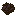
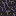

Cambium Wiki
Living Materials
To thrive in Cambium, you'll need to acquaint yourself with biological bases rather than strictly metal ingots.
Organic Ash
Organic Ash is the byproduct of breaking down standard wood and plant matter in the Solar Digester. It's entirely devoid of conventional fuel value, but it is rich in the foundational nutrients needed to kickstart a biological ecosystem.

- Usage: Primarily combined with dirt to create Mineral Soil.
Mineral Soil

Resource saplings cannot survive in sterile dirt. Mineral Soil provides the high density of nutrients they require to grow.
- Usage: Place a sapling directly ON TOP of this soil to initiate growth into a Resource Tree.
Biopolymer
Once you begin harvesting custom fruit, you can refine their outputs into Biopolymer. This functions similarly to plastic or rubber in other mods. It's strong, flexible, and essential for high-tier machine chassis.
Biocomposite Paste
An intermediate sticky bonding agent. Used in complex crafting recipes involving living organisms.
Biopolymer Casing
Crafted using Copper Ingots and Biopolymer. The Biopolymer Casing is a reinforced machine frame required to build advanced solar technology such as the Solar Concentrator.
Last updated: March 17, 2026